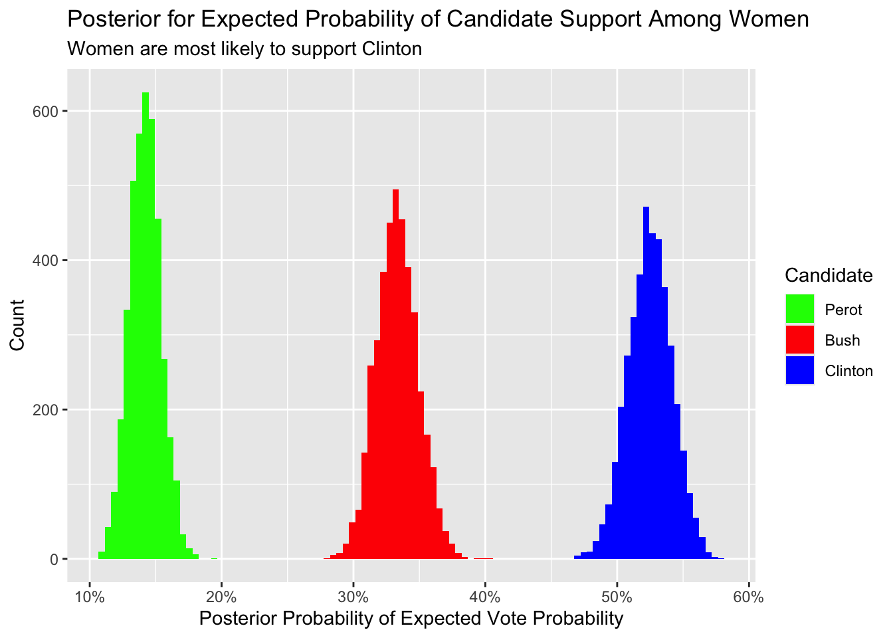
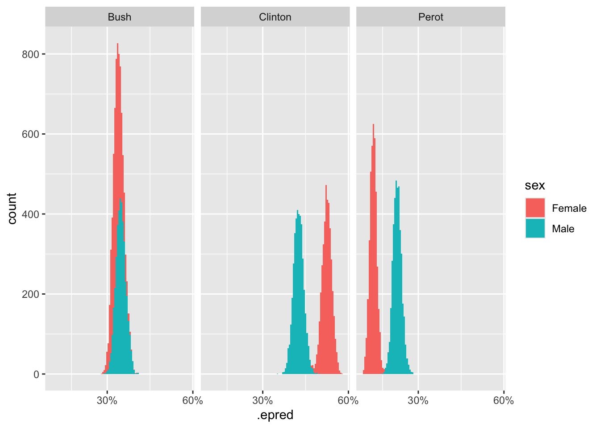

8 Four Parameters: Categorical
Packages:
The primer.data package includes nes, a tibble with the data from the American National Election Studies. We use the brms and tidybayes packages to create and manipulate Bayesian models. As always, we use the tidyverse package.
Consider:
What was the relationship between sex and voting in the 1992 US Presidential election?
8.1 Wisdom
Wisdom requires the creation of a Preceptor Table, an examination of our data, and a determination, using the concept of validity, as to whether or not we can (reasonably!) assume that the two come from the same population.
8.1.1 Preceptor Table
A Preceptor Table is smallest possible table with rows and columns such that, if there is no missing data, our question is easy to answer.
Causal or predictive model: This model is predictive not causal. Sex can not be a treatment because there is no (plausible) way to manipulate it. Recall the motto: “No causation without manipulation.”
Units: The rows of the Preceptor Table refer to individual US voters. The question suggests that we are not interested in people who did not vote, although one might explore if men were more or less likely to vote in the first place. As always, the initial question rarely specifies the Preceptor Table precisely.
Outcome: We want Presidential voting behavior in 1992. Such explorations are often restricted to just the two “major party” candidates, the nominees of the Democratic and the Republican parties, Bill Clinton and George HW Bush. But, in 1992, Ross Perot was a very successful “third party” candidate, winning almost 19% of the vote. Should he be included in the analysis? What about the 4th place finisher, Libertarian Andre Marrou? Again, the question does not specify. However, the outcome variable is certainly the candidate for whom an individual voted.
Covariates: The only covariate we will consider is sex, with two values: “male” and “female”. Whatever your feelings about the contemporary limits of the sex binary, this is the only data collected in 1992s. In a full analysis, we would make use of more covariates, but the primary purpose of this chapter is to explore a categorical model with three possible outcomes.
Moment in Time: The Preceptor Table refers to the election season in the fall of 1992. We make no claims about other US presidential elections, not least because few feature a third party candidate as popular as Perot. Our purpose here is historical. We want to better understand what happened in this election, not make claims about other time periods. The moment in time is, however, longer than just Election Day itself since mail-in votes were cast in the weeks proceeding the election.
| Preceptor Table | ||
|---|---|---|
| ID | Outcome | Covariate |
| Vote | Sex | |
1 |
Democrat |
M |
2 |
Third Party |
F |
… |
… |
… |
10 |
Republican |
F |
11 |
Democrat |
F |
… |
… |
… |
103,754,865 |
Republican |
M |
As usual the ID column is irrelevant. We don’t need to know exactly who voted for whom to answer our question. We just need to know the sex of each voter.
There were 104,425,014 total votes cast in the 1992 Presidential election. But our table only has 103,754,865 rows because we are only modeling people who cast their votes for one of the three main candidates. Is that the “right” approach? It depends! As always, data science is a dialogue between the question with which we start and the data/tools we have available to answer it. In this case, we choose to simplify the question, to focus on only the three main candidates, mainly because we want to use a model with three outcomes. We could, instead, create a more complicated model which included votes cast for other candidates. Our new question is now:
What was the relationship between sex and voting in the 1992 US Presidential election among supporters of the three leading candidates: Clinton, Bush and Perot?
8.1.2 EDA
Our data comes from American National Election Studies. The primer.data package includes a version of the main data set with a selection of variables. The full ANES data is much richer than this relatively simple tibble.
nes# A tibble: 46,838 × 18
year state sex income age education race ideology voted region
<int> <chr> <chr> <fct> <fct> <fct> <chr> <fct> <chr> <fct>
1 1952 NY Female 68 - 95 25 - 34 Highschool White Weak Re… Yes North…
2 1952 NY Female 68 - 95 25 - 34 Elementary White Indepen… Yes North…
3 1952 NY Female 34 - 67 25 - 34 Highschool White Indepen… Yes North…
4 1952 NY Male 34 - 67 55 - 64 Some Highscho… White Strong … Yes North…
5 1952 OH Female 0 - 16 65 - 74 Highschool + White Strong … Yes Midwe…
6 1952 OH Female 68 - 95 45 - 54 Some Highscho… White Indepen… Yes Midwe…
7 1952 ID Female 0 - 16 65 - 74 Elementary White Indepen… Yes West
8 1952 MI Male 17 - 33 25 - 34 Highschool + Black Weak De… Yes Midwe…
9 1952 GA Female 0 - 16 25 - 34 Some Highscho… White <NA> No South
10 1952 OH Female 68 - 95 35 - 44 Elementary White Weak Re… Yes Midwe…
# ℹ 46,828 more rows
# ℹ 8 more variables: pres_appr <chr>, influence <chr>, equality <chr>,
# religion <chr>, better_alone <chr>, therm_black <int>, therm_white <int>,
# pres_vote <chr>See the ?nes for details. We only need a small subset of this data:
Show the code
nes_92# A tibble: 1,658 × 2
sex pres_vote
<chr> <chr>
1 Female Bush
2 Female Bush
3 Female Clinton
4 Male Bush
5 Female Clinton
6 Female Clinton
7 Female Perot
8 Male Bush
9 Female Bush
10 Male Perot
# ℹ 1,648 more rowsIt is worth thinking about the quality of this data. How did NES, how do we, know for whom a surveyed individual voted? The answer is that we don’t. NES does not check the voting records and, even if it did, it could not determine a person’s vote.
As always, visualization is a useful tool. Plot your data! The outcome variable usually goes on the y-axis.
8.1.3 Validity
Our Preceptor Table includes the 103,754,865 people who voted for one of the three leading candidates in the 1992 presidential election. Our data includes a (tiny) subset of those people. This is a standard aspect of a “historical” data science project, when the data we want (the Preceptor Table) and the data we have come from the same moment in time. This makes the assumptions of validity and stability much easier to maintain. Of course, there can always be problems. A response to the nice ANES surveyer about one’s vote (or sex) is not the same thing as one’s actual vote (or sex). Indeed, a standard artifact of political surveys is that more people claim to have voted for the winning candidate than actually did. In this case, however, we will assume that validity holds and that we can “stack” the columns from the Preceptor Table and the data on top of each other. In fact, validity allows us to assume that the rows in the data is actually a subset of the rows in the Preceptor Table. To summarize:
Using data from the National Election Studies survey of US citizens, we seek to understand the relationship between voter preference and sex in the 1992 Presidential election.
8.2 Justice
Justice concerns four topics: the Population Table, stability, representativeness, and unconfoundedness.
8.2.1 Population Table
Because this project is historical, the Population Table has the same number of rows as the Preceptor Table.
| Population Table | |||
|---|---|---|---|
| Source | ID | Outcome | Covariate |
| Vote | Sex | ||
PT/Data |
1 |
Democrat |
M |
PT/Data |
2 |
Third Party |
F |
PT |
3 |
Republican |
M |
PT |
4 |
Democrat |
F |
PT |
5 |
Democrat |
F |
PT |
6 |
Democrat |
M |
… |
… |
… |
… |
PT/Data |
10 |
Republican |
F |
PT/Data |
11 |
Democrat |
F |
PT |
12 |
Democrat |
… |
PT |
13 |
Republican |
F |
… |
… |
… |
… |
PT/Data |
103,754,865 |
Republican |
M |
We are not interested in these voters outside of the 1992 election. So, this Population Table, unlike most, does not require a Time column. The Preceptor Table and the data come from the same moment in time. Of course, this is not literally true. Recall: The Time column is always a lie. Some voters cast their ballots weeks before Election Day. Some NES participants were surveyed right after the election. Some were survey later. We sweep all these complications under the mythical moment in time which we assert is the same for both the data and the Preceptor Table.
8.2.2 Stability
If the assumption of stability holds, then the relationship between the columns in the Population Table is the same for three categories of rows: the data, the Preceptor Table, and the larger population from which both are drawn. In this case, there is no larger population. Or, rather, the Preceptor Table is the larger population. And, since the data and the Preceptor Table come from the same moment in time, stability holds by definition.
8.2.3 Representativeness
The NES is a highly professional organization so their survey does a good of capturing a random sample of all voters. But no real world survey is perfect! There are always problems. In particular, there are (somewhat) unobserved differences between the sort of people who respond to surveys and the sort of people who don’t. NES is more likely to capture the votes of cooperative people than the votes of misanthropes. If, among misanthropes, the relationship between sex and Presidential candidate is different than the relationship among cooperative voters, we might have problems. The technical term for the problem of people who don’t respond to surveys is “non-response.”
8.2.4 Unconfoundedness
Because this is a predictive, not causal, model, the assumption of unconfoundedness is irrelevant.
Using data from the National Election Studies (NES) survey of US citizens, we seek to understand the relationship between voter preference and sex in the 1992 Presidential election. Our results might be biased by differential non-response among different categories of voters.
8.3 Courage
Justice gave us the Population Table. Courage selects the data generating mechanism. We first specify the mathematical formula which connects the outcome variable we are interested in with the other data that we have.
Because we have three possible outcomes, and because there is no natural ordering among the outcomes, a categorical model is the most natural choice. The binomial model which we used in Chapter 4 is just a special case of a categorical model, one in which there are only two outcomes. Recall:
\[ red_i \sim Bernoulli(\rho) \] A more verbose way to present this same model would be:
\[ red_i \sim Categorical(\rho_0, \rho_1) \] After all, there are two possible values for \(red_i\), 0 and 1. There is, therefore, a probability that the bead comes back not-red and a probability that it comes back red. Label those probabilities \(\rho_0\) and \(\rho_1\). In a Bernoulli model, we don’t bother to consider both \(\rho_0\) and \(\rho_1\) because of the mathematical relationship which must hold between them:
\[ \rho_0 + \rho_1 = 1 \] If you know the value of \(\rho_1\), then you can calculate the value of \(\rho_0\) easily. So, in Bernoulli models we don’t bother to even consider both \(\rho_0\) and \(\rho_1\). We just worry about the value of \(\rho_1\), and define it as \(\rho\), with the 1 underscore understood by convention.
Things get more complex, however, with more than two possible outcomes.
\[ vote_i \sim Categorical(\rho_{bush}, \rho_{clinton}, \rho_{perot}) \] The vote of person \(i\) takes on one of three possible values: Bush (Republican), Clinton (Democrat) or Perot (Third Party). The probability of each outcome is given by the respective \(\rho\). And, by definition:
\[ \rho_{bush} + \rho_{clinton} + \rho_{perot} = 1 \] So, once we know two of the probabilities, we know the third. That means that we can’t estimate them separately. If we do, we run the risk of violating this equality. We must estimate them together. Fortunately, brms takes care of all the details.
Recall the logit link function from the Bernoulli model in Chapter 4:
\[ \rho = \frac{e^{\beta_0}}{1 + e^{\beta_0}} \]
We need to expand this in two ways: First, we have to allow for variables (in this case, the sex of the voter) to influence the probability.
\[ \rho = \frac{e^{\beta_0 + \beta_1 {male}}}{1 + e^{\beta_0 + \beta_1 {male}}} \] The logit link function can be expanded just like a simple linear regression. We just add more terms, along with their associated coefficients. Regardless of how complex this term becomes, \(\rho\) will remain bounded between 0 and 1.
Second, we need to allow for three different \(\rho\)’s. This is the Categorical model:
\[ \begin{aligned} \rho_{clinton} &=& \frac{e^{\beta_{0, clinton} + \beta_{1, clinton} male}}{1 + e^{\beta_{0, clinton} + \beta_{1, clinton} male}}\\ \rho_{perot} &=& \frac{e^{\beta_{0, perot} + \beta_{1, perot} male}}{1 + e^{\beta_{0, perot} + \beta_{1, perot} male}}\\ \rho_{bush} &=& 1 - \rho_{clinton} - \rho_{perot} \end{aligned} \]
There is no longer just one \(\beta_0\) and one \(\beta_1\). Instead, there is \(\beta_0\) for Clinton, labeled as \(\beta_{0, clinton}\) and a \(\beta_0\) for Perot, labeled as \(\beta_{0, perot}\). The same applies to \(\beta_1\). These parameters need to be different because being male has a different connection to the probability for voting for Clinton than it does for the probability for voting for Perot. We can’t have a separate \(\beta_0\) and \(\beta_1\) for Bush because \(\rho_{bush}\) is fully defined once we know \(\rho_{clinton}\) and \(\rho_{perot}\).
8.3.1 Models
Fitting a categorical model with brms is very similar to fitting the other models we have learned.
fit_nes <- brm(formula = pres_vote ~ sex,
data = nes_92,
family = categorical(),
silent = 2,
refresh = 0,
seed = 76)We use silent = 2 and refresh = 0 to hide all the messages produced by brm(). We don’t want to clutter the Primer. But those messages can be important. So, we constructing your models interactively, show the messages, at least until you confirm that there is nothing to worry about.
fit_nes Family: categorical
Links: muClinton = logit; muPerot = logit
Formula: pres_vote ~ sex
Data: nes_92 (Number of observations: 1658)
Draws: 4 chains, each with iter = 2000; warmup = 1000; thin = 1;
total post-warmup draws = 4000
Regression Coefficients:
Estimate Est.Error l-95% CI u-95% CI Rhat Bulk_ESS Tail_ESS
muClinton_Intercept 0.45 0.07 0.31 0.60 1.00 2827 2802
muPerot_Intercept -0.86 0.11 -1.08 -0.64 1.00 2577 2687
muClinton_sexMale -0.25 0.11 -0.48 -0.04 1.00 2894 2704
muPerot_sexMale 0.42 0.14 0.14 0.71 1.00 3036 2666
Draws were sampled using sampling(NUTS). For each parameter, Bulk_ESS
and Tail_ESS are effective sample size measures, and Rhat is the potential
scale reduction factor on split chains (at convergence, Rhat = 1).The most relevant parts of the fitted model are the parameter estimates.
fixef(fit_nes) Estimate Est.Error Q2.5 Q97.5
muClinton_Intercept 0.4546458 0.07467146 0.3080325 0.59727294
muPerot_Intercept -0.8553572 0.10854045 -1.0764757 -0.64397943
muClinton_sexMale -0.2529694 0.11176079 -0.4759733 -0.03690656
muPerot_sexMale 0.4244909 0.14498279 0.1399061 0.71336963The term muClinton_Intercept refers to \(\beta_{0, clinton}\). The term muClinton_sexMale refers to \(\beta_{1, clinton}\). And so on. The more complex our models become, the less interested we are in the values of any particular parameter. Also, the parameters in more complex models rarely have simple interpretations, as they sometimes do in simple linear models. So, ignore the specific values. But do note how all 4 variables have confidence intervals which exclude zero. This suggests, but does not prove, that they are all worth including in our model.
We can use add_epred_draws() to explore the posterior distribution of the expected values of \(\rho_{clinton}\), \(\rho_{bush}\), and \(\rho_{perot}\) for women.
fit_nes |>
add_epred_draws(newdata = tibble(sex = "Female")) |>
ggplot(aes(x = .epred, fill = .category)) +
geom_histogram(bins = 100) +
scale_x_continuous(labels = scales::percent_format()) +
labs(title = "Posterior for Expected Probability of Candidate Support Among Women",
subtitle = "Women are most likely to support Clinton",
x = "Posterior Probability of Expected Vote Probability",
y = "Count",
fill = "Candidate") +
scale_fill_manual(values = c("Clinton" = "blue",
"Bush" = "red",
"Perot" = "green"),
limits = c("Perot", "Bush", "Clinton"))
8.3.2 Tests
As usual, we use pp_check() to examine if the “fake data” created from our DGM matches our actual data.
8.3.3 Data Generating Mechanism
Putting the mathematics together with the parameter estimates gives us the data generating mechanism
\[ vote_i \sim Categorical(\rho_{bush}, \rho_{clinton}, \rho_{perot}) \]
\[
\begin{aligned}
\rho_{bush} &=& 1 - \rho_{clinton} - \rho_{perot}\\
\rho_{clinton} &=& \frac{e^{0.45 - 0.25 male}}{1 + e^{0.45 - 0.25 male}}\\
\rho_{perot} &=& \frac{e^{-0.86 + 0.42 male}}{1 + e^{-0.86 + 0.42 male}}\\
\end{aligned}
\] This is the last time we are going to go to the trouble of combining the mathematical formula of the DGM with the specific estimated values. First, these formulas are misleading! The value of \(\beta_{0, clinton}\), for example, is not exactly 0.45. In fact, we don’t know what the value is! Being Bayesians, we calculated a posterior probability distribution for \(\beta_{0, clinton}\). We draw from that distribution when we calculate quantities of interest, as we did above with add_epred_draws(). Second, you probably did not even look that closely at these complex formulas. And we don’t blame you! Being a good race car driver means focussing on how to drive better, not on the physics of carburetors. Similar, being a good data scientist means focusing on the Cardinal Virtues as a method for using data to answer questions. Leave the math to the computer.
8.4 Temperance
Courage produced the data generating mechanism. Temperance guides us in the use of the DGM — or the “model” — we have created to answer the questions with which we began. We create posteriors for the quantities of interest. We should be modest in the claims we make. The posteriors we create are never the “truth.” The assumptions we made to create the model are never perfect. Yet decisions made with flawed posteriors are almost always better than decisions made without them.
8.4.1 Questions and Answers
Recall the question with which we began:
What was the relationship between sex and voting in the 1992 US Presidential election?
The more you progress in your data science education, the more general the questions with which you will be expected to handle. There is no single answer to this question! There are many true things one could say in response.
Often, the best answers to broad questions are graphics. Consider:
fit_nes |>
add_epred_draws(newdata = tibble(sex = c("Female", "Male"))) |>
select(sex, .category, .epred) |>
ggplot(aes(x = .epred, fill = sex)) +
geom_histogram(bins = 100) +
facet_grid(~ .category) +
scale_x_continuous(breaks = c(0.05, 0.3, 0.6),
labels = scales::percent_format())Adding missing grouping variables: `.row`
# labs(title = "Posterior for Expected Probability of Candidate Support Among Women",
# subtitle = "Women are most likely to support Clinton",
# x = "Posterior Probability of Expected Vote Probability",
# y = "Count",
# fill = "Candidate") +
# scale_fill_manual(values = c("Clinton" = "blue",
# "Bush" = "red",
# "Perot" = "green"),
# limits = c("Perot", "Bush", "Clinton"))8.4.2 Humility
We can never know the truth.